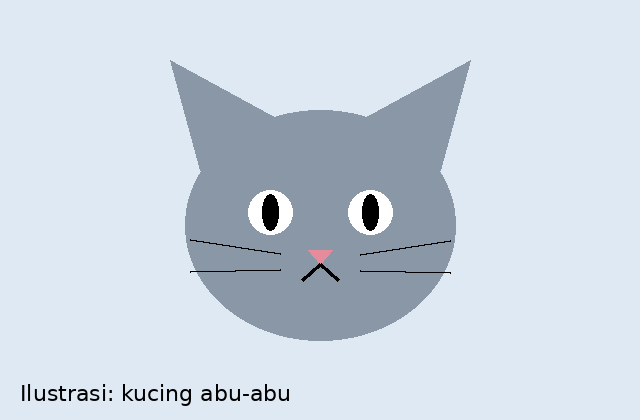
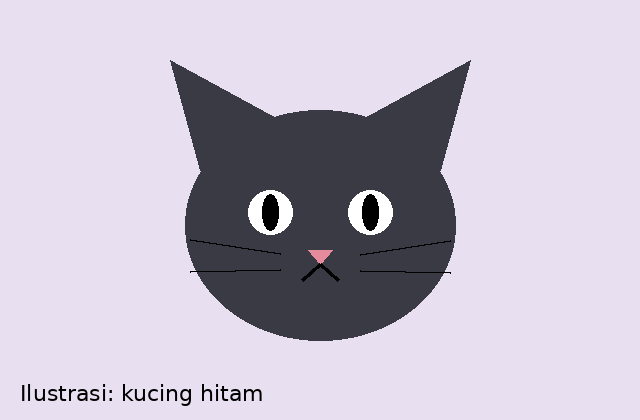

Makanan dan Minuman
Kucing membutuhkan protein hewani. Makanan kering (dry food) praktis disimpan, sedangkan makanan basah lebih disukai dan membantu asupan cairan.
Boleh diberikan
- Makanan kucing kering atau basah
- Ikan atau ayam rebus tanpa bumbu dan tanpa tulang
- Air bersih setiap hari
Hindari
- Makanan berbumbu, pedas, atau asin
- Cokelat, bawang, dan bawang putih
- Susu sapi dalam jumlah banyak

Kesehatan dan Jadwal Perawatan
Tabel berikut adalah gambaran umum. Jadwal pastinya sebaiknya dikonsultasikan dengan dokter hewan terdekat.
| Perawatan | Perkiraan Usia / Waktu | Keterangan |
|---|---|---|
| Obat cacing | Mulai sekitar 2-3 minggu, diulang berkala | Mencegah cacingan pada anak kucing |
| Vaksin dasar (F3) | Sekitar 8-9 minggu, booster 3-4 minggu kemudian | Melindungi dari beberapa penyakit menular umum |
| Vaksin rabies | Sekitar 12 minggu ke atas | Dilakukan oleh dokter hewan |
| Sterilisasi | Sekitar 6 bulan, sesuai saran dokter hewan | Mengendalikan populasi dan mengurangi perkelahian |
Cara Menolong Kucing yang Terlihat Sakit
Langkah pertolongan pertama
- Dekati pelan-pelan, jangan membuatnya kaget
- Pindahkan ke tempat teduh yang tenang
- Berikan air minum, jangan paksa makan
- Segera bawa ke dokter hewan jika luka, muntah terus-menerus, atau lemas
Jika kamu menemukan kucing yang butuh pertolongan, isi formulir laporan.
